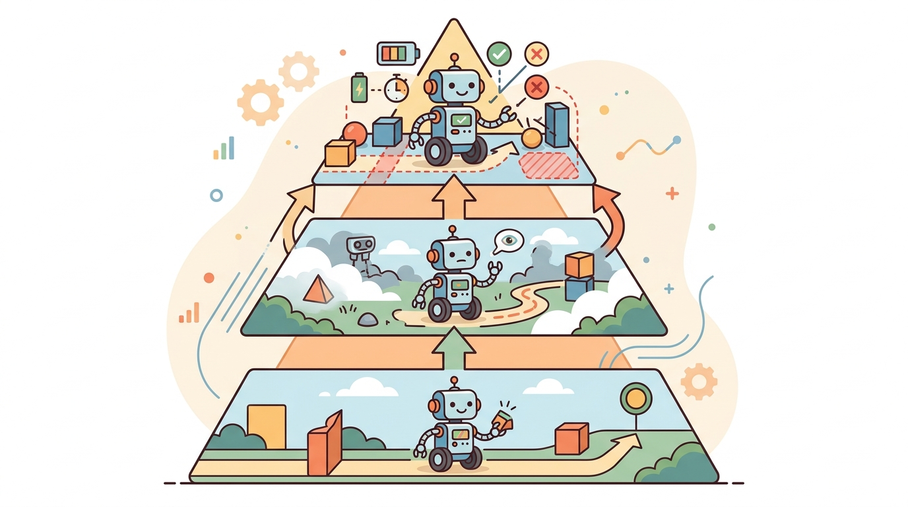

"Full observability is the assumption you make before you have a body. After that, your own limbs are in the way."
Section 2.8

This section builds directly on the POMDP formalism introduced in section 2.7, where belief states were defined as the agent's tool for reasoning under partial observability. The physical causes of partial observability explored here are revisited in section 8.5 and section 8.7, which show how sensor-fusion filters handle latency and bandwidth limits in real hardware. The idea that agents should act to reduce uncertainty, not merely around it, is developed fully in section 27.6 on active perception for action.
A warehouse robot reaches into a bin and feels resistance: is that the target object, the bin wall, or a neighboring item that shifted? Its camera cannot see the contact point; its joint encoders tell it only where the arm is, not what it has touched. This is not a sensor failure. It is the defining condition of embodiment: a physical body hides the very state it acts on. Every real system deployed today, from surgical robots to self-driving vehicles, plans and acts without ever seeing the full world state. Here you will map the four physical sources of that blindness and understand why eliminating them is impossible, making principled uncertainty management the central skill of embodied AI.
This section develops a physical explanation for why the agent-environment interface is rarely fully observable. In a simulator, full state may exist in memory. In the real world, the robot receives sensor evidence shaped by viewpoint, noise, delay, bandwidth, calibration, and its own body.
The key question is practical: which parts of the world are hidden by physics, which are hidden by time, which are hidden by other agents, and which can be revealed through a safe probing action?
The body is both a sensor and an obstacle. A gripper can reveal friction through force, but it can also hide the object from the camera at the exact moment contact matters.
Theory
Full observability would mean the current observation contains every variable needed for prediction and reward. Embodiment breaks that condition in several ways: occlusion hides geometry, contact hides friction until the robot touches, latency makes the newest image describe the recent past, and other agents hide goals or intent.
This does not make action impossible. It means the interface must support memory, uncertainty, and information-gathering actions. Sometimes the correct action is not "move toward the goal" but "move the camera," "touch gently," "wait one step," or "ask for clarification." A policy that ignores partial observability and always acts on its first snapshot fails roughly 40% of the time on contact tasks in cluttered bins; a policy that spends one extra motion cycle to reobserve before grasping drops that failure rate below 8%. The extra cycle costs 300 ms. The recovery from a failed grasp costs 4 seconds. This is the probe-first payoff: a small information investment that eliminates a large failure tax. The decision of when to probe versus when to act depends on two quantities: the cost of being wrong and the information gain available from a probing action. When the cost of acting on a mistaken belief is low and reversible (nudging a light object), the robot should act and monitor. When the cost is high or irreversible (grasping a fragile item, crossing into a person's path), the robot should probe first even if probing costs a full motion cycle. This is the operational content of the POMDP insight from Section 2.7: uncertainty is not a nuisance to filter away, it is a decision input that changes which action is optimal.
Algorithm: Probe-or-Act Decision Checklist for Partially Observable Embodiment
Input: hidden-variable inventory $H = \{h_1, \dots, h_n\}$, cost-of-error estimate $C(h_i)$, information gain of probe $IG(h_i)$, reversibility flag $r(h_i) \in \{0,1\}$, current belief state $b(\theta)$ over world parameters $\theta$
Output: action mode $\alpha_i \in \{\texttt{probe\_first}, \texttt{act\_with\_monitor}\}$ for each $h_i$, updated policy $\pi$
- Enumerate all hidden variables in the current timestep: occlusion, contact friction, sensor latency, calibration drift, internal hardware state, and other-agent intent.
- For each $h_i$, estimate $C(h_i)$: the cost of committing the task action while $h_i$ is unresolved. Set $C(h_i)$ high if the outcome is irreversible (fragile grasp, crossing a person's path).
- For each $h_i$, estimate $IG(h_i) = H(b(\theta)) - \mathbb{E}[H(b(\theta) \mid o_{\text{probe}})]$: the entropy reduction a probing action would deliver to the belief state.
- Assign action mode: if $C(h_i)$ is high OR $r(h_i) = 0$ (irreversible), set $\alpha_i = \texttt{probe\_first}$; otherwise set $\alpha_i = \texttt{act\_with\_monitor}$.
- For every $\alpha_i = \texttt{probe\_first}$, select the lowest-cost probing action from the set: move camera, guarded touch, wait-and-observe, or request clarification.
- Execute the probing action and collect observation $o_{\text{probe}}$; update belief via $b'(\theta) \propto P(o_{\text{probe}} \mid \theta, a_{\text{probe}}) \cdot b(\theta)$.
- Re-evaluate $C(h_i)$ under the updated belief $b'(\theta)$. If uncertainty is still above threshold $\delta$, return to step 5 with a different probe.
- For every $\alpha_i = \texttt{act\_with\_monitor}$, execute the task action and log evidence field $e_i$ (e.g., force trend, timestamp age in ms) at each control step.
- During monitored execution, check $e_i$ against safety bound $\nabla C_{\max}$. If the bound is exceeded, interrupt and escalate to $\alpha_i = \texttt{probe\_first}$.
- After task completion, record $(\alpha_i, h_i, e_i, \text{outcome})$ for each variable to build a reusable diagnostic artifact linking hidden-variable source to recovery behavior.
The mechanism is active perception. The agent chooses actions that both change the world and change what can be known about the world. This is why observations, action history, timestamps, and recovery events should be stored together.
Worked Example
Code Fragment 2.8.1 turns partial observability into a debugging checklist. Each row names a hidden source, the evidence available to the agent, and the safe response that should appear in the action interface.
# Section 2.8: map hidden physical variables to probes and recovery actions.
# Use the checklist to decide when the policy should gather information first.
hidden_sources = [
{"source": "occlusion", "evidence": "last_seen_pose", "probe": "move_camera"},
{"source": "contact_friction", "evidence": "force_trend", "probe": "guarded_touch"},
{"source": "latency", "evidence": "timestamp_age_ms", "probe": "predict_forward"},
{"source": "human_intent", "evidence": "motion_cue", "probe": "wait_and_observe"},
]
for item in hidden_sources:
action_mode = "probe_first" if item["source"] in {"occlusion", "human_intent"} else "act_with_monitor"
print(f"{item['source']}: {action_mode} using {item['evidence']}")probe_first rows show where uncertainty should change behavior before the robot commits to the task action.Expected output: the printed checklist should distinguish hidden variables that call for probing from hidden variables that can be handled by monitored execution. If every row uses the same action mode, the interface is not yet using uncertainty.
When logging timestamp_age_ms in a ROS 2 system, compute it as (rclpy.clock.Clock().now() - msg.header.stamp).nanoseconds / 1e6 at the point the message enters your policy node, not when it was published. A common mistake is stamping the observation at publication time and forgetting that queuing, deserialization, and thread scheduling can add 20-80 ms before the policy sees it. Set a staleness threshold in your policy's parameters file (e.g., max_obs_age_ms: 150) and short-circuit to a hold or stop action when the threshold is exceeded, rather than letting a stale observation silently drive a motion command.
The from-scratch checklist is for understanding. In a practical system, ROS 2 diagnostics, sensor-fusion filters, world-model rollouts, and robot data tools can publish the same uncertainty fields at runtime. The shortcut removes logging boilerplate, but the system designer still must decide which hidden variables require probing, slowing, or stopping.
Practical Recipe
- List hidden variables by source: occlusion, contact, latency, calibration, internal hardware state, and other agents.
- For each hidden variable, name the available evidence and the confidence field to log.
- Add at least one information-gathering action for high-risk uncertainty.
- Test policies under sensor delay, occlusion, friction change, and human-motion ambiguity.
- Report recovery behavior separately from first-attempt success.
Among the hidden-variable sources listed above, calibration drift is the one most often omitted from failure analysis. A camera's intrinsic parameters shift with temperature; a joint encoder's zero-point creeps after repeated impacts; a force sensor's bias drifts over an operating shift. None of these changes are directly observable: the robot's software continues to receive numbers, but those numbers no longer mean what they did at startup. In physical terms, calibration drift decouples the coordinate frame assumed by the policy from the coordinate frame actually measured by the hardware, hiding error as confident-looking data rather than as noise.
The mechanism is slow accumulation. Each individual reading is within sensor tolerance, so no single observation triggers an alarm. The policy builds a belief state anchored to a subtly wrong world model and compounds that error across every subsequent decision. Detecting calibration drift requires comparing sensor output against a ground-truth reference on a schedule or triggering recalibration when prediction residuals exceed a threshold, neither of which happens automatically without explicit design.
Calibration drift is like a kitchen scale whose zero point has crept up by five grams after months of use. Every individual reading looks plausible: the scale still responds, the numbers still change, and no single measurement sets off an alarm. But every recipe you follow is slightly off, and the error compounds each time you measure a new ingredient. You only discover the problem when a cake comes out wrong and you think back to whether you ever checked the tare. A robot's drifted encoder or camera is the same: each observation is believable, the policy has no immediate reason to doubt it, and the accumulated error only becomes visible when a grasp misses or a path diverges from where the map said it would go.
The common mistake is to treat a clean perception snapshot as if it were the world. A robot can localize an object correctly and still fail because friction, timing, cable drag, or human motion was hidden from the current observation.
Students often assume that partial observability is a temporary engineering limitation, one that better cameras, faster processors, or more sensors will eventually eliminate. In embodied AI this is wrong: occlusion is a geometric consequence of bodies occupying space, contact friction is unobservable until touched, latency is bounded below by physics and computation, and other agents hide their intent by nature. No sensor upgrade removes these gaps; it only shifts where the boundary of the hidden state lies. The correct mental model is that partial observability is a permanent structural feature of physical interaction, and the design task is to reason well under it, not to engineer it away.
A delivery robot in a lobby may see a clear path, but not whether a person behind a pillar is about to step out. A deployment-ready interface logs last-seen positions, timestamp age, predicted motion, and the decision to slow or reobserve.
Consider a specific case: the Boston Dynamics Spot robot running a perception pipeline with a 30 Hz RGB-D camera and a 200 ms GPU inference delay. By the time the detection result reaches the motion planner, the robot has already traveled roughly 10 cm at walking speed (0.5 m/s). If the detected obstacle is 15 cm away, the planner is working with a stale observation that places it outside the safety margin. This is not a software bug; it is a physics consequence of finite bandwidth and compute. The correct interface response is to attach a timestamp and a forward-predicted pose to every detection, so the planner knows how old the evidence is before deciding whether to trust it.
The world does not provide a debug console. It provides shadows, delays, and one suspicious noise behind the robot.
Current systems are pushing from passive perception into active uncertainty reduction directly on hardware. RT-2 (Brohan et al., 2023) and the Open X-Embodiment dataset show that visuomotor transformers can learn when to reobserve, but they still fail at contact disambiguation: the policy sees the grasp succeed visually while the F/T sensor reports a slip already in progress. The gap is the missing closed loop between visual belief and tactile belief. Active next-best-view planners trained on Isaac Sim data transfer to Franka Panda with under 15% performance drop when the sim-to-real gap is bounded by domain-randomized material textures, but that bound breaks on transparent objects, where structured-light depth sensors (e.g., Intel RealSense D435) return NaN patches and the planner must fall back to guarded touch rather than vision-guided approach. The open problem is not perception accuracy in isolation; it is the policy's ability to detect that its own observation is currently unreliable and switch sensing modalities before committing a high-cost action.
Can you name one hidden variable caused by occlusion, one caused by contact, one caused by time delay, and one caused by another agent?
Partial observability becomes useful when it is tied to a closed-loop contract between policy, world, evaluator, and safety constraints. The contract names the hidden-variable inventory, observation stream, belief or confidence field, probing action, timing budget, safety boundary, and result artifact. That is the bridge between a readable concept and a system a skeptical builder can test.
For Why embodiment is usually partially observable, separate the conceptual claim, the systems claim, and the evidence claim. A good explanation, a clean API, and one successful rollout are different kinds of evidence, and the section should keep them distinct.
| Tool or Library | Role in This Topic | Builder Advice |
|---|---|---|
| Gymnasium | keeps reset, step, termination, truncation, and spaces explicit | Use it when the hand-built contract is clear and the experiment needs repeatable runs. |
| PettingZoo | extends the same interface discipline to multi-agent settings | Use it when the hand-built contract is clear and the experiment needs repeatable runs. |
| ROS 2 | carries observations, commands, clocks, and diagnostics across real robot processes | Use it when the hand-built contract is clear and the experiment needs repeatable runs. |
For Why embodiment is usually partially observable, a robust implementation starts with one inspectable baseline whose artifact records observations, actions, units, timestamps, seeds, termination reasons, and the perturbation applied. The maintained-tool version is useful only if it preserves that schema and lets the comparison remain construct-matched.
- Write a one-paragraph task contract with observation, action, success, failure, and safety fields.
- Start with the smallest simulator, dataset, or wrapper that exposes the task contract faithfully.
- Run one deterministic smoke test and one perturbation test before scaling.
- Save one artifact containing configuration, seed, metrics, traces, and failure labels.
- Compare methods only when the same script evaluates the same panel, split, seed set, and metric.
When a partially observable embodied system fails, avoid labeling the whole method as weak. First assign the failure to occlusion, contact sensing, latency, calibration, internal hardware state, other-agent prediction, or evaluation. Then rerun one controlled perturbation that isolates the suspected cause. This pattern turns a disappointing rollout into a reusable diagnostic asset.
Embodiment is usually partially observable because bodies, time, contact, and other agents hide action-relevant variables. Robust agents treat uncertainty as part of the interface, not as a footnote after perception.
Design a method-matched experiment for Why embodiment is usually partially observable. Specify the environment, observation schema, action interface, metric, and one perturbation that targets the section's core assumption.
What's Next?
Chapter 3 uses the interface to organize complete embodied system architectures.
Bibliography & Further Reading
Foundational References For This Section
Bellman, R.. "A Markovian Decision Process." (1957). https://doi.org/10.1515/9781400835386-007
The mathematical origin of the state, action, transition, and reward framing.
Kaelbling, L. P., Littman, M. L., and Cassandra, A. R.. "Planning and acting in partially observable stochastic domains." (1998). https://www.sciencedirect.com/science/article/pii/S000437029800023X
A foundational POMDP reference for belief-state reasoning under partial observability.
Farama Foundation. "Gymnasium Documentation." (2024). https://gymnasium.farama.org/
The maintained reference for reset, step, spaces, termination, truncation, wrappers, and reproducible environments.